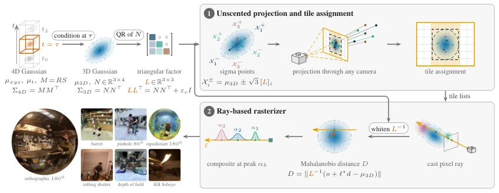
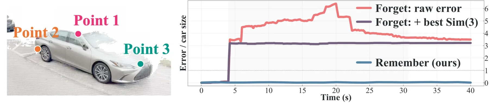
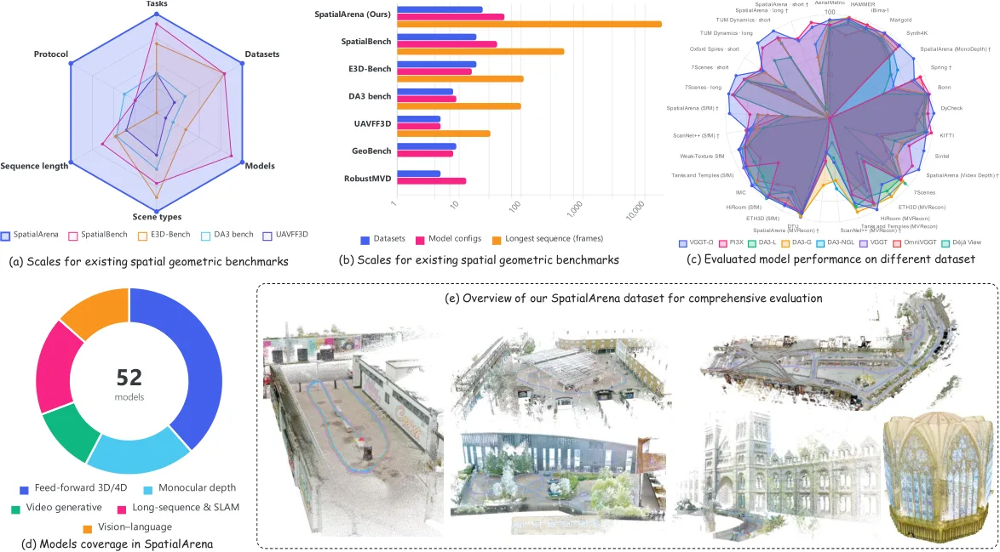
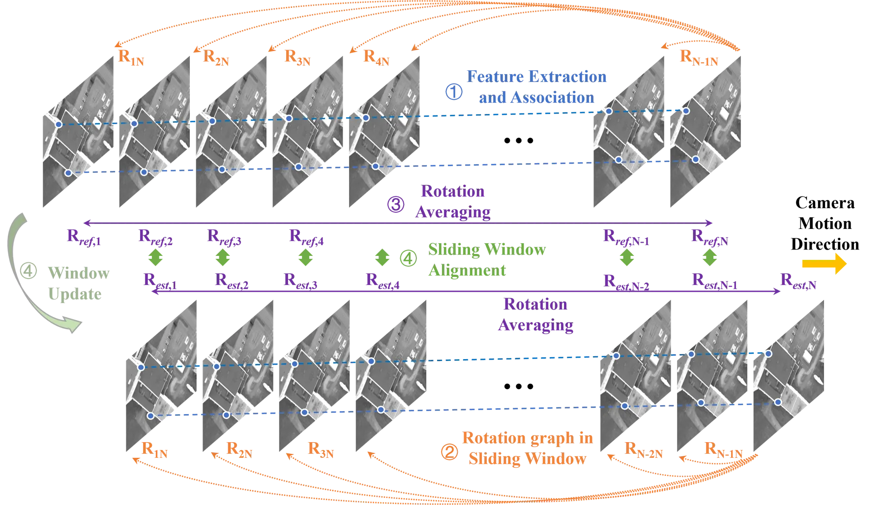

新论文 · 日期 2026-11-24 · score 19 · S层 · Learning + Geometric Optimization SLAM/VIO · cs.RO
内容级别：完整单篇海报
作者：Kuan Xu, Tianxin Hu, Ruofei Bai, Ruimeng Liu
评分 9/10
视觉-惯性-腿 SLAM自监督 sim-to-real双层优化方差分量估计因子图融合嵌入式实时
一句话工作总结：一句话：把「腿式里程计网络」和「视觉地图」放进同一个双层优化里互相精化，于是无真值也能把腿式里程计适配到实机，融合权重再由方差分量估计按残差统计在线调。
腿式机器人的视觉-惯性-腿（VIL）状态估计只需在 IMU 与关节编码器之外再加一台相机，但学习型腿式里程计卡在监督上：仿真训练的模型有 sim-to-real 差距，真机标签又需要动捕或额外 LiDAR，而直接用视觉估计当伪标签会让网络复制视觉误差、失去与视觉互补的能力。AirLeg 把这个问题写成双层优化：下层是多传感器 BA，用腿式里程计精化视觉地图；上层用精化后地图的重投影误差监督网络，因此监督信号本身被多…
Visual-inertial-leg (VIL) state estimation offers cost-effective localization for legged robots, adding only a camera to the onboard IMU and joint encoders. However, learning-based leg odometry is limited by i…

新论文 · 日期 2026-11-25 · score 18 · S层 · 3D/4D Spatial Perception · cs.CV
内容级别：完整单篇海报
作者：Shihang Wei, Yichi Zhang, Fengqing Zhu
评分 7.2/10
动态 3DGS4D 表示版本字典率失真高斯压缩自由视点视频
一句话工作总结：一句话：把「运动」换成「版本」——每帧状态显式存，未变的高斯只加一次引用，于是快速运动付出的是存储而不是画质；再靠剪枝与图像编码把存储压回来。
现有动态高斯泼溅要么把随时间的变化编码成时间的平滑函数，要么编码成帧间的受限更新，两者在快速运动下都会明显掉质量：在困难的舞蹈序列上，高运动帧比低运动帧低 1.1–4.0 dB。VersionGS 改为直接编码每一帧的高斯状态，只用运动估计来引导重建：在每个帧组（GOP）内，未变化的高斯保留当前版本并共享一个字典，发生变化的高斯作为新版本追加，早期帧继续引用旧版本。为了让版本尽量被复用，作者提出选择性顺序构建——只…
Recent dynamic Gaussian splatting methods encode temporal change, either as smooth functions of time or as constrained updates between frames. We observe that their reconstruction quality degrades significantl…

新论文 · 日期 2026-11-25 · score 16 · S层 · 3D/4D Spatial Perception · cs.CV, cs.GR
内容级别：完整单篇海报
作者：Sascha Kirch, Rafael Pagés, Jan Ondřej, Clara Pérez-Molina
评分 7.6/10
4D 高斯光线渲染非针孔相机鱼眼/广角数值稳定性新视角合成
一句话工作总结：一句话：4D 高斯原本用不上光线渲染，是因为协方差开方不稳定；把 4D 协方差的平方根条件化之后，就能在原始鱼眼画面上训练、用任意镜头渲染，而且每步代价只比 EWA 高一点。
真实相机不是针孔，但大多数动态高斯泼溅都假设它们是，于是先把画面去畸变——广角与鱼眼会因此丢掉视场或细节。静态高斯泼溅已经用「基于光线的光栅化」解决了这件事，可原生 4D 高斯（在时空中建模运动）无法直接套用：每个高斯的方向与尺寸无法从它的协方差里稳定恢复。AnyCam4D 的做法是训练原生 4D 高斯时就用光线求值，从而可以直接在原始画面上训练、保留视场与分辨率，每步代价与标准投影相当。关键贡献是一个数值稳定的方…
Real cameras are not pinholes, yet most dynamic Gaussian splatting assumes they are. Footage is therefore undistorted first, losing field of view or detail, especially with wide-angle and fisheye cameras. Stat…

新论文 · 日期 2026-11-24 · score 16 · S层 · Geometry Foundation Models / 3D Foundation Models · cs.RO, cs.CV, cs.LG
内容级别：完整单篇海报
作者：Itai Mizlish, Boaz Ben-Moshe
评分 7.8/10
深度基础模型int8 量化失效知识蒸馏边缘部署地面接触测距SLAM/导航
一句话工作总结：一句话：int8 注意力在几百个 token 上结构性失效，所以把深度基础模型蒸馏成纯卷积学生，再用「相机高度 + 地面接触点」把相对深度换成米制量程，于是几瓦算力也能做测距与导航。
小型地面机器人只能带一台相机与几瓦算力，而能把相机变成测距仪的深度基础模型却是为 GPU 设计的 ViT。本文把其中一个搬上 Raspberry Pi 5 + Hailo-8L（全整数量化的加速器，连注意力也是 int8），并先回答了「为什么不能直接量化」：在 449 个 token 的输入下，float 模型里 91% 的 softmax 权重小于一个 int8 步长，却承载每个 query 17–33%（中位…
A small ground robot can carry one camera and a few watts of compute, but the depth foundation models that could turn that camera into a range sensor are vision transformers sized for GPUs. We bring one to a R…

新论文 · 日期 2026-11-25 · score 14 · S层 · 3D/4D Spatial Perception · cs.CV
内容级别：完整单篇海报
作者：Tianle Lyu
评分 8.2/10
长时 4D 重建误差归因持久世界状态稀疏锚点蒙皮免训练插件长序列
一句话工作总结：一句话：长视频退化的主因是「对没看见的点继续重新预测」，所以修法不是更好的对齐而是一个记忆——看不见就保持，看得见才平均更新；动态物体只跟踪少量锚点再蒙皮。
前馈 4D 跟踪器能从短片段恢复相机运动、深度与点轨迹，但把窗口首尾相接铺到长视频上就会退化。本文先用实验排除最常见的解释：把所有窗口交接处的对齐换成真值变换，跟踪误差几乎不变（EPE 1.568 对 1.569）。误差真正随时间增长的方式是「距上次观测的帧数」——静态点一旦离开视野，跟踪器仍从看不见它的窗口里反复解码位置，每解一次就覆盖前一次已恢复的几何，作者称之为遗忘。仅仅保留未见点的最后观测位置而不改网络，就…
Feed-forward 4D trackers recover camera motion, depth, and point trajectories from short video clips, but chaining windows over long videos degrades their accuracy. We find that replacing inter-window alignmen…

新论文 · 日期 2026-11-24 · score 11 · S层 · 3D/4D Spatial Perception · cs.CV
内容级别：完整单篇海报
作者：Yu Chen, Haosen Yang, Su Ee Tan, Zhensong Zhang
评分 8.6/10
几何基础模型基准与协议稳健对齐深度估计SfM/SLAM 评测相机 roll 先验
一句话工作总结：一句话：把「对齐」当作评测协议的一部分固定下来，再用同一个尺子量 52 个几何模型，于是看出公开基准的高分有相当一部分来自视角正立、深度范围窄、序列短这三件事。
3D 感知正从任务专用流程转向几何基础模型（单目深度、前馈 3D/4D 重建、预测几何的视觉-语言模型），但它们的进展无法可靠度量：每篇论文采样帧、设分辨率、选划分的方式都不同，数字不可比；每次评测都要做的 up-to-scale 对齐本身可能比模型之间的差距更大——在错误的空间拟合深度会让误差接近三倍，标准轨迹对齐会把失败方法的误差低报最多 2.6 倍；公开基准也很少覆盖长录制、动态场景和航拍视角。Spatial…
3D perception is shifting from task-specific pipelines to geometric foundation models: monocular depth networks, feed-forward 3D/4D reconstruction models, and vision--language models that predict geometry. How…

新论文 · 日期 2026-11-24 · score 15 · A层 · Embodied Navigation / VLN / Spatial Reasoning · cs.RO, cs.CG
内容级别：半海报
作者：Xiaokai Song, Li Zhang, Xichao Teng, Erting Pan
评分 7.4/10
旋转-only 视觉里程计可观测性旋转平均UAV 导航小视差几何
一句话工作总结：一句话：既然小视差下平移方向不可观测，就干脆不估平移——只做相对旋转的多视一致选择与滑窗旋转平均，让深度不确定性没有通道传播到姿态。
在中低空飞行的无人机上，图像噪声会把旋转与平移估计耦合在一起，即使很小的扰动也能让平移方向出现大误差。受远距离视觉感知中角度线索的启发，作者提出只估旋转的视觉里程计（ROVO）：从匹配图像估计成对相对旋转，在重叠窗口内稳健平均，再通过共享帧把相邻窗口对齐。由于轨迹状态里只保留朝向，不确定的地标深度不会传播到后续估计。在轨迹仿真中，滑窗 ROVO 的平均朝向误差只有传统 SLAM 基线的 10.7%；在真实飞行数据上…
Image noise can confound rotation and translation estimates in monocular visual navigation for unmanned aerial vehicles (UAVs) at low and moderate altitudes, where even small perturbations may cause large erro…
新论文 · 日期 2026-11-24 · score 17 · A-层 · Real-time / GPU Robotics Systems · cs.CV, cs.RO
内容级别：简报式摘要
作者：Weicong Zhang, Yuan Huang, Yu Zheng, Lin Chenxiao
评分 6.8/10
全景 SLAMLiDAR-视觉-惯性高斯泼溅建图数据集嵌入式部署
一句话工作总结：一句话：把跟踪与建图都搬到球面域，用 LiDAR 盲区的视觉特征补位姿、用 DAEP 补新表面并剪漂浮物，代价是嵌入式上要降分辨率与视角预算。
全景相机一帧就能覆盖接近整个球面视场，但这种覆盖与 LiDAR 视场不匹配，给依赖 LiDAR 深度先验的全景高斯泼溅 SLAM 带来实质困难。GOLD-SLAM 在球面域内做跟踪与建图，并用 LiDAR 覆盖不到的区域里的视觉特征提升位姿估计；针对新观测表面覆盖不足与增量建图中的漂浮伪影，提出深度感知的地图扩展与剪枝（DAEP）。为便于评测，作者用无人机平台采集了 WHOLE 数据集，覆盖弱几何、高动态、全向、低…
Panoramic cameras capture nearly the entire spherical field of view in a single frame. However, the mismatch between this panoramic coverage and the field of view of LiDAR poses a substantial challenge for pan…
新论文 · 日期 2026-11-24 · score 18 · B层 · Neural Rendering / 3DGS / NeRF · cs.CV, cs.RO
内容级别：简报式摘要
作者：Dong Hwi Kim, Park Sangwon, Chaehyeon Song, Ayoung Kim
评分 6.6/10
在线 3DGSSLAM 建图视图管理漂浮物抑制实时系统
一句话工作总结：一句话：地图过拟合的根因是「视角太少、更新预算固定」，所以把中间帧放进来、按组分配预算、按细节放高斯，并用地图自己的渲染证据压掉前方漂浮物。
把 3DGS 与 SLAM 耦合能得到实时可渲染的地图，但地图仍沿用传统 SLAM 的优化设计：只在为定位挑选的关键帧上训练，并用不确定的前端深度约束几何。这些设计忽略了 3DGS 地图的模型复杂度——参数上百万、每个区域却只有少数视角，于是过拟合稀疏输入。本文从两侧同时收紧：一方面把关键帧之间的非关键帧图像随建图更新逐步纳入训练集，并按「新关键帧、全部关键帧、非关键帧」三组各自提供的监督分配有限更新；另一方面用边…
The realistic rendering of 3D Gaussian Splatting (3DGS) has drawn interest from real-time applications that require maps to be built online. This led to coupling 3DGS with SLAM, providing camera poses and init…